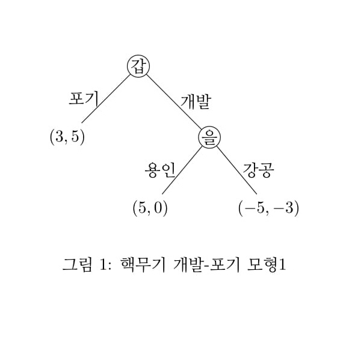
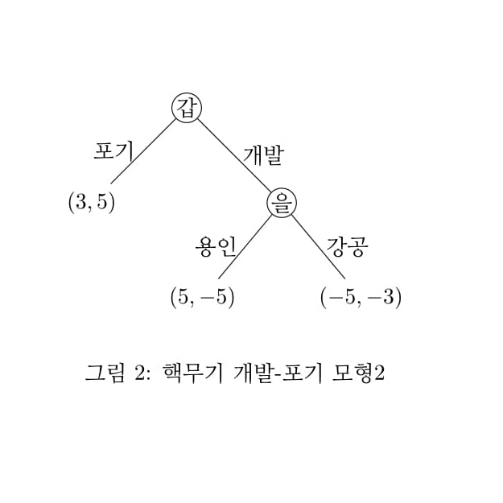

게임이론의 해 중에 부분게임 완전균형 (subgame perfect nash equilibrium) 이라는 것이 있다.
갑국과 을국의 핵무기 개발을 둘러싼 긴장을 게임이론으로 설명하면 다음과 같다.
갑은 핵무기를 개발할지, 아니면 이 돈으로 다른 사업에 쓸지를 고려하고 있다.
갑이 핵무기 개발을 포기하고 다른 곳에 투자한다면 그 댓가로 을에게 일정부분 보상을 받아 갑은 3의 효용을, 을은 전쟁을 회피하여 5의 효용을 얻는다.
갑이 핵무기를 개발한다면 을은 이에 강력 대응과 이를 용인하는 두 가지 선택안이 있다. 을이 강력 대응한다면 쌍방간의 전쟁으로 갑은 -5, 을은 -3 의 효용을 얻는다.
만약 을이 갑의 위협에 굴복하여 이를 용인한다면 갑은 5, 을은 0 의 효용을 얻는다. 이 상황을 그래프로 그리면 다음과 같다.

이 게임에서 최선의 선택은 무엇인가? 이 게임에서 갑의 전략은 핵무기 개발, 또는 포기 두 가지다.
을의 전략은 갑의 선택에 영향을 받으므로 i) 갑의 포기시 무대응, 갑의 개발시 강공, ii) 갑의 포기시 무대응, 갑의 개발시 용인의 두 가지다.
<핵무기 개발-포기>
을 갑 |
포기-무대응 개발-강공 |
포기-무대응 개발-용인 |
| 포기 |
(3, 2) |
(3, 2) |
| 개발 |
(-5, -3) |
(5, 0) |
이 게임의 내쉬 균형은 두 개다. i) 갑의 포기, 을의 갑의 개발시 강공, ii) 갑의 개발, 을의 갑의 개발시 용인. 표에서 회색으로 칠해진 칸이다. 각각의 칸에서 상대가 다른 전략으로 이탈할 유인이 없음을 알 수 있다.
그런데 첫 번째 내쉬균형은 비합리적임을 알 수있다. 첫 번째 균형은 표에서 세로로 비교하여 갑이 핵무기 개발시 을이 강공을 취할 것을 두려워하여 더 낳은 선택을 한 것이다.
그러나 그림1에서 볼 수 있듯이 막상 갑이 핵무기를 개발하면 을은 이를 용인하는 것이 최선이다. 따라서 첫번째 균형은 실현가능성이 없는 위협에 굴복하여 실현된 균형이고 이 내쉬균형은 비합리적인 균형이 되는 것이다.
반대로 두 번째 균형은 앞과같은 비합리성이 없다.
게임이론에서는 후자의 균형을 부분게임완전균형이라 부른다. 그 이유는 그림에서 설명하면 다음과 같다. 게임나무에서 을의 선택은 자체로 소규모의 게임을 이룬다. 이를 부분게임이라 한다. 부분게임에서 을은 강공시 -3, 용인시 0 을 비교하여 최선의 선택(균형)은 용인이다.
이제 전체 나무를 봤을 때 갑은 포기와 을의 용인을 비교하면 된다. 이 경우 갑은 포기시 3, 개발시 5를 얻으므로 개발이 최선이다. 따라서 갑은 개발, 을은 갑의 개발시 용인이 균형이 되는 것이다. 이 균형은 부분게임에서 균형인 균형이므로 이를 부분게임완전균형이라 한다.
또한 역으로 추론하여 게임의 해를 추론하므로 역방향추론법( backward induction)이라 부른다.
이와 같은 게임의 결론을 실제 상황과 비교하면 어떨까? 갑국이 핵무기를 개발하는 것이 탁월한 선택이라는 것은 현실의 국제사회의 요구와 반대되는 결론이다. 게임이론을 현실에 적용하기 위해서는 보수(효용)값의 선정에 신중해야 한다.
갑국은 위와 같은 상황을 설정하고 핵무기 개발을 강행하는 것일 수 있다. 우리가 핵무기를 개발하고 나면 을국은 싸움을 두려워하여 이를 용인할 것이라는..... 그러나 을국 및 국제사회는 다르게 판단할 수 있다.
갑이 핵무기를 개발하더라도 핵위협에 굴복하지 않을 것이라고 판단할 수 있다. 이 경우 을의 보수는 갑이 예상한 값과 다를 것이다.
예를 들어 다음의 그림을 보자.

보수값을 용인시 (5, -5), 강공시 (-5, -3)로 바꿨다. 이 경우 을은 강공 전략을 구사하는 것이 최선이고 갑은 3과 -5를 비교하여 포기가 최선이다. 즉 갑 포기, 을 개발시 강공이 부분게임완전균형이 되는 것이다.
이상과 같이 게임의 보수를 어떻게 평가하는가에 따라 게임의 결과가 달라질 수 있다. 이 점이 게임이론을 현실에 적용했을 때 가장 신경써야 되는 부분이다.
결론적으로 핵무기 개발을 둘러산 양국의 현실의 상황은 이렇게 누군가가 상황을 오판하고 있기 때문에 발생하는 것이다.